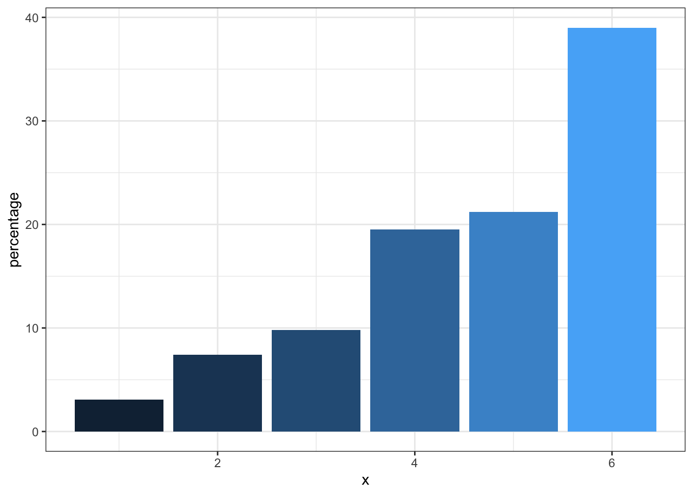
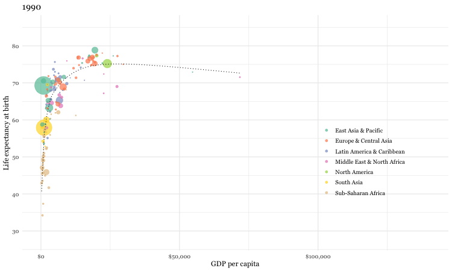

Chapter 3 Data visulaizations
3.1 Introduction
There is a modern tendency for researchers to immediately present their results in the most complex and sophisticated manner. This is often seen as proof of their respectability and importance. However, a step wise approach that begins by presenting data in its rawest form of Tables and Graphs is both more logical and beneficial to understanding. In fact, there is are several historical examples of excellent visualizations involving epidemiology.
Although remembered as the mother of modern nursing, Florence Nightingale was an accomplished statistician too being the first female fellow of the Statistical Society of London (now Royal Statistical Society). She was particularly innovative in presenting data visually as by this example published in her 1858 monograph, “Notes on matters affecting the health, efficiency and hospital administration of the British army”. The chart displays the causes of the deaths of soldiers during the Crimean war, divided into three categories: “Preventible or Mitigable Zymotic Diseases” (infectious diseases, including cholera and dysentery, coloured in blue), “wounds” (red) and “all other causes” (black). As with today’s pie charts, the area of each wedge is proportional to the figure it stands for, but it is the radius of each slice (the distance from the common centre to the outer edge) rather than the angle that is altered to achieve this. Her principal message—that even during periods of heavy fighting, such as November 1854, far more soldiers died from infection than from wounds—can be seen at a glance. It seems a fair bet that her talents as a data scientist contributed to her successful introduction of medical advances in military hospitals.
Figure 3.1: Classic epidemiology visualizations - Nightingale’s Rose
Charles Minard’s 1869 publication of a flow map of Napoleon’s Russian 1812 campaign has been called best statistical graphic ever drawn by Edward Tufte who is a preeminent 21st century statistician and pioneer in the field of data visualization. The figure shows 6 six types of data in two dimensions: the number of Napoleon’s troops; the distance traveled; temperature; latitude and longitude; direction of travel; and location relative to specific dates. The chart tells with painful clarity the atrocious losses associated with this campaign as an initial force of 422,000 saw only only 10,000 return. On the retrurn trip 50% of the forces were lost while crossing the Bérézina river under heavy attack. “C’est la Bérézina” is a French expression used to describe a total disaster.
Figure 3.2: Classic epidemiology visualizations - Napoleon’s Russian 1812 Campaign
3.2 Why is data visualization important?
Specifically, data visualizations can help
* understand your data
* understand basic concepts
* emphasize a message
* build trust with your audience
* clarify your story for others
* inform / influence their decisions
* poor data visualizations can do the opposite!
If you have any doubts about the power of visualizations, you must watch this video by Hans Rosling. Leaving aside his fabulous and infectious enthusiasm, (who wouldn’t want to be a global health data scientist after watching this), the knowledge transmission from his data visualizations is simply amazing.
3.3 Creating an effective and professional appearing graph
Here is a static image from Rosling’s video. It certainly is of professional quality. Can we reproduce it?
Figure 3.3: Gapminder data
If the first plot we produce is of this quality, it will hopefully inspire us to realize what we can accomplish with data visualizations using R. While this may rightly not completely dispel the notion that a definitive learning curve is associated withR, it is certainly suggests it can be manageable. Here is the code that reproduces the graph.
library(gapminder)
dat <- gapminder %>% filter(year == 2007)
un_graph <- ggplot(dat, aes(x = gdpPercap, y = lifeExp)) +
geom_point(aes(size = pop, color = continent), alpha = 0.5) +
stat_smooth(formula = y ~ log10(x), se = FALSE, size = 0.5, color = "black", method = 'gam', linetype="dotted") +
xlab("GDP per capita") +
ylab("Life expectancy at birth") +
scale_size_area(guide = FALSE, max_size = 15) +
scale_x_continuous(labels = scales::dollar) +
ggtitle("Gapminder data from 2007") +
labs(caption = "Data from gapminder library") +
scale_color_brewer(name = "", palette = "Dark2") +
theme_minimal(base_size = 12, base_family = "Georgia")
un_graph
The code can be understood as follows;
1. We load the data which is available in the R Gapminder library.
2. As data exists every 5 years from 1952, we have selectrd only 2007 data to match the static plot
3. Graphing will use ggplot function from the ggplot2 library
4. The ggplot function first requires a data argument (in the form of a data frame)
5. The next argument is aes for aesthetics and identifies the x and y variable names from the data frame
6. In R any task such as identifying variable names can usually be accomplished by several ways (e.g. names(gapminder), str(gapminder), glimpse(gapminder), head(gapminder))
7. Output is layered onto the graphical surface beginning here with the data points (geom_points) followed by a smoothed regression line (stat_smooth)
8. Next purely aesthetic details such as a title, legends and a theme are added. As a beginner, and even as a more advanced user, it is not necessary to memorize all the possible formatting options as quick and accessible online resources are available to add these final refinements to your graphs (see
Using the gganimate package, a fully animated graph can be made with the code below

### animated graph
un_plot <- ggplot(gapminder, aes(x = gdpPercap, y = lifeExp)) +
geom_point(aes(size = pop, color = continent), alpha = 0.5) +
stat_smooth(formula = y ~ log10(x), se = FALSE, size = 0.5, color = "black", method = 'gam', linetype="dotted") +
xlab("GDP per capita") +
ylab("Life expectancy at birth") +
scale_size_area(guide = FALSE, max_size = 15) +
scale_x_continuous(labels = scales::dollar) +
ggtitle("Gapminder data from 2007") +
labs(caption = "Data from gapminder library") +
scale_color_brewer(name = "", palette = "Dark2") +
theme_minimal(base_size = 12, base_family = "Georgia") +
# gganimate code
ggtitle("{frame_time}") +
transition_time(year) +
ease_aes("linear") +
enter_fade() +
exit_fade()
animate(un_plot)